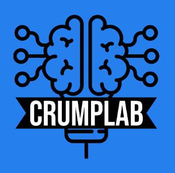

Courses

List of current and previous courses taught at Brooklyn College of CUNY and the Graduate Center of CUNY.
Current Courses
Psyc 2530: Introduction to Cognitive Psychology (Asynchronous Online)
Fall 2023
Undergraduate
OER
For my students: although most of the course materials are available on the course website, this course is under development until the official start of the Fall 2023 semester.

Past Courses
Psyc 3470/SOCY 3507: Data Analytics and Data Visualization in the Social and Behavioral Sciences
Spring 2023
Undergaduate
OER

Psyc 2530: Introduction to Cognitive Psychology (In Person)
Fall 2022
Undergraduate
OER
Course website displays current materials, archived materials from this semester may be available on Github.
Psyc 2530: Introduction to Cognitive Psychology (Asynchronous online)
Spring 2022
Undergraduate
OER
Course website displays current materials, archived materials from this semester may be available on Github.
Psyc 7709G: Using R for Reproducible research
Spring 2022
Brooklyn College
Experimental Psych MA
Graduate

Psyc 2530: Introduction to Cognitive Psychology (Synchronous online)
Fall 2021
Undergraduate
OER
Course website displays current materials, archived materials from this semester may be available on Github.
Psyc 7765/66G: Statistical Methods Applications I & II
2020-2021
Brooklyn College
Experimental Psych MA
Graduate


Psyc 7709G: Using R for Reproducible research
Spring 2019
Brooklyn College
Experimental Psych MA
Graduate
Psyc 3400: Statistical Methods in Psychological Research
Undergraduate
OER
All materials are totally free and open, including the course Website, textbook, and lab manual.

Psyc 80103: Cognitive Technologies: From theory and data to application
Graduate Center of CUNY
CCP Training Area
Doctoral

Psyc 3450: Experimental Psychology
Undergraduate
OER
An undergraduate course on research methods, using a free OER textbook! Written by myself and many others. Check out the textbook here. Check out the course website here.


Psyc 3530: Introduction to Cognitive Psychology
Undergraduate

Psyc 80103: Special Topics Seminar: Learning & Attention
Doctoral
Special topics doctoral course co-taught with Andrew Delamater
Psyc 80103: Special Topics: Memory: Foundations & Current Issues
Doctoral
Special topics doctoral course co-taught with Elizabeth Chua
Psyc 80103: Career Development
Doctoral
Special topics doctoral course co-taught with Elizabeth Chua